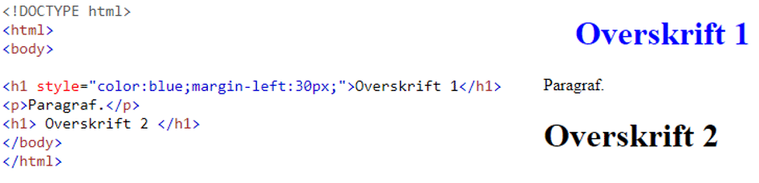

Grundlæggende CSS
CSS er en forkortelse for Cascading Style Sheet og er det som står for det designmæssige på et website. CSS bruges bl.a til at indsætte billeder, bestemme positionering af elementer og ændring af farver og størrelser.
Kaskaderegel
Når man laver en regel i CSS, vil alt andet indhold som nu måtte være ovenstående, blive erstattet med den sidst angivne regel, dette kaldes kaskadereglen.
3 måder at bruge CSS på

Et eksterns stylesheet kan ligge lokalt, eller befinde sig på en helt fjern server, man skal blot linke til den i sin HTML.
En af fordelene ved at linke til en ekstern CSS fil er at man har væsentlig mindre kode i sit HTML dokument, hvilket gør at den fylder mindre og vil blive hurtigere indlæst hos brugeren.
For at henvise til et eksternt style sheet bruges < link > elementet som sættet ind i headeren. I eksemplet er der ikke angivet nogen som helst styling af < h1 > og < p > direkte i HTML filen. I stedet er der linket til et eksternt stylesheet.CSS selectors
CSS bruger selectors til at udpege elementer der skal styles, eksempelvis en bestemt id eller klasse.
En selector peger på det HTML element som man ønsker at style, til at angive hvad der skal styles, af det som vores selector peger på, bruges disse klammer { }.
Det som skal styles angiver man via en række deklarationer så som font-size. En deklaration består af en egenskab og en værdi og afsluttes med semikolon.
Opbygning af CSS element
Først har man en selector, derefter en start klamme, en egenskab, kolon for at adskille, en værdi, en afslutning i form af semikolon, og til sidst en slut klamme.

Ofte anvendte selectors
Hvis man har en eller flere elementer som skal styles forskelligt, går man ind og bruger id og class selectere.
Hvis man vil give et bestem element et unikt id, skal man i elementets start tag skrive hashtag ( # ). Elementet har nu fået en unik id og kan styles separat.
En class selector bruges til hvis man har en gruppe af elementer på samme side, som man ved skal have den samme styling. For at lave en klasse bruges der punktum ( . ) i stedet for hashtag. Herefter giver man klassen et navn f.eks: .specialklasse. Alle egenskaber denne klasse har, vil nu blive påført på flere elementer på HTML siden som har det samme klasse navn.
Psuedo klasser bruges når der interageres med et element. Et eksempel er a:hover selectoren, der får et element til at reagere anderledes når en musemarkør ”hover” over den

Strukturelle selectors
Hvis man har en eller flere elementer som skal styles forskelligt, går man ind og bruger id og class selectere.
Med denne selector kan man udpege et specifikt element inde i andet element, også selv hvis der er andre elementer imellem. Hvis man ville style a i sin nav, kan det skrives på følgende måde: a nav {font-size 35px;}. Elementet har nu fået en unik id og kan styles separat.
Denne selector bruges når man vil udpege et specifikt sted man vil ændre. Til dette bruges der denne pil ”>”
Eksempel:
div > h1 {font-size: 36px;}
Her fortælles der at alle h1´er som ligger under en div, vil få fontstørrelsen 36px.
Typer af child selectors
I eksemplet kan det ses, at man i HTML koden har angivet at p:first-child, har fået tildelt nogle egenskaber, det vil altså sige at det kun er hos den første paragraf < p > hvor egenskaberne gælder, selvom der findes flere paragraffer < p > i samme section.
Skrifttyper
I sin kode er det muligt at benytte sig af flere forskellige skrifttyper med vidt forskellige størrelser og egenskaber på samme tid.
Hvis man bruge nogle atypiske fonte, som de færreste browsere understøtter, vil ens tekst ikke blive vist som ønsket, og vil blive omdannet til en standard font, som f.eks Times New Roman.
For at undgå dette er det en god idé at bruge online hostede fonte, som er tilgængelige for alle. Dette kunne være Google fonts eller Adobe Typekit.
Kodeeksempler på tekst styling:
Font-weight
Font-family
Font-size
Brugte kilder:
www.w3schools.com/cssref/sel_firstchild.asp
dag3 - intro til css pdf af Niels Østergaard